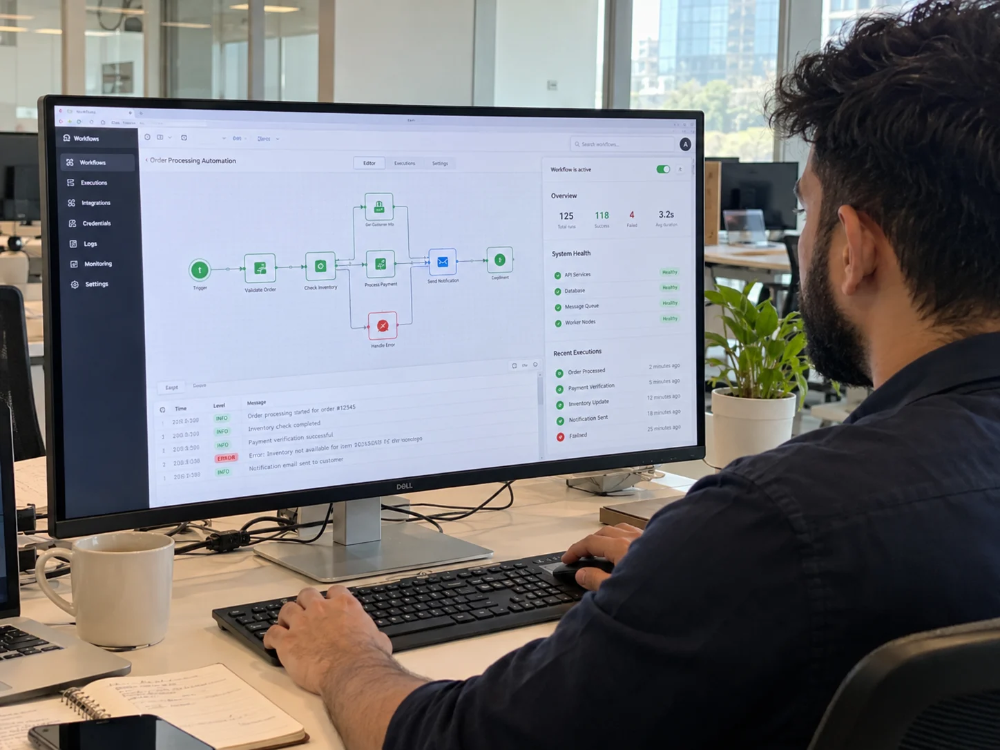

RPA Platforms
Bot platforms for automating screen-based tasks in systems that offer no API access.
Automation Services
Cypherox provides business process automation services across RPA, workflow automation, and marketing and CRM automation. Every automation is designed with its failure paths, monitoring, and alerts from the start, so your team knows when something needs attention.
Explore modular AI architectures tailored to your business:
What Cypherox Offers
Each service suits a different kind of process: stable screen-based tasks, multi-system workflows with approvals, and marketing and sales processes that run on CRM data. Many projects combine two or all three.
Software bots that handle rule-based tasks in systems without APIs, such as data entry, invoice processing, and report collection.
Multi-step processes coordinated across your systems and people through API integrations, event triggers, approval steps, and error routing.
Lead routing, scoring, lifecycle emails, and CRM data sync that keep marketing and sales working from the same accurate records.
Some systems can only be operated through their screens, so staff copy data between them by hand. Our robotic process automation services build bots that perform these steps, logging every run and sending anything outside the rules to an exception queue. We also tell you when RPA is the wrong fit and an API integration would last longer.
Many processes stall in the gaps between systems: a form waits for approval, data is re-entered in another tool, or nobody notices a failed step. Our workflow automation services connect those systems through APIs, add approval steps where people must decide, and route errors to the right owner. If a step needs judgment, we can bring in an AI agent.
Automated campaigns and sales follow-ups fail quietly when CRM records are incomplete or duplicated. Our marketing automation services and CRM automation services set up lead scoring, routing, and lifecycle emails, while data quality rules stop duplicates and missing fields from spreading. Sync between your CRM and other systems keeps every team working from the same record.
An automation that fails without anyone noticing can do more damage than the manual process it replaced. These four practices are part of every intelligent automation service we deliver.

How Cypherox Automates
Automating a broken process only makes the problems faster. We map and clean up each process first, then build, test with real cases, and monitor after launch.
We map how the process runs today, measure volume and effort, and pick the candidates where automation pays off.
We choose RPA, workflow, or CRM automation, and define what happens for every exception and failure.
We build the bots or workflows and connect them to your systems with limited, dedicated credentials.
We run the automation on historical and live examples, including unusual cases, before switching off the manual process.
We track runs, failures, and processing times, and update automations when connected systems or rules change.
Automation Platforms
We select platforms based on your existing systems, licensing, hosting requirements, and who will maintain the automation after launch.
Bot platforms for automating screen-based tasks in systems that offer no API access.
Orchestration tools that connect applications through APIs, triggers, and approval steps.
Customer and marketing systems where we configure scoring, routing, emails, and data rules.
Tools that track automation runs, surface failures, and keep data consistent across systems.
Automation Platforms
We work with established automation, integration, and CRM platforms, choosing those that fit your current stack and can be maintained by your team.
Operations, finance, and revenue teams on what changed once repetitive process work stopped landing on their desks.
"Hi, my name is Gabrielle, and I'd like to share my experience working with Cypherox Technologies on one of the mobile apps and websites I built with them. The team members at Cypherox Technologies were attentive, diligent, communicative and very, very bright. I had an amazing experience working with them and I highly recommend."

"I'm Britney and I'm the head of conversion optimization for Acadia, a digital marketing agency. I've had the pleasure of working with the Cypherox team for over two, going on three years now. They're fast, hardworking and really diligent developers. They're really reliable, skilled developers and have been a great partner and a pleasure to work with."

"Hey I'm Brian and I recently worked with Cypherox Technologies who developed an e-commerce platform. For me, working with Cypherox Technologies was truly an excellent experience. I recently collaborated with them to design and develop the custom e-commerce platform from the Groundhog and their expertise was evident from day one."

"Hi, I'm Becke. I've had the pleasure of working with Cypherox Technologies on a recent web development project. It was a custom, heavy CRM and the experience was seamless from start to finish. The product was delivered on time and he went the extra mile to ensure everything was done so that we understood the process. It was just, it was brilliant. It was really, really good service. So yeah, absolutely brilliant; I'd recommend it. Thank you so much. Thank you."

"I would highly recommend working with Cypherox Technologies if you need a custom CRM platform. They always exceed their clients' expectations at every stage of the project. Their team designs and builds fully customized ecommerce platforms from the ground up, approaching every project with remarkable skill and dedication."

"Hi, my name is Gabrielle, and I'd like to share my experience working with Cypherox Technologies on one of the mobile apps and websites I built with them. The team members at Cypherox Technologies were attentive, diligent, communicative and very, very bright. I had an amazing experience working with them and I highly recommend."
"I'm Britney and I'm the head of conversion optimization for Acadia, a digital marketing agency. I've had the pleasure of working with the Cypherox team for over two, going on three years now. They're fast, hardworking and really diligent developers. They're really reliable, skilled developers and have been a great partner and a pleasure to work with."
"Hey I'm Brian and I recently worked with Cypherox Technologies who developed an e-commerce platform. For me, working with Cypherox Technologies was truly an excellent experience. I recently collaborated with them to design and develop the custom e-commerce platform from the Groundhog and their expertise was evident from day one."
"Hi, I'm Becke. I've had the pleasure of working with Cypherox Technologies on a recent web development project. It was a custom, heavy CRM and the experience was seamless from start to finish. The product was delivered on time and he went the extra mile to ensure everything was done so that we understood the process. It was just, it was brilliant. It was really, really good service. So yeah, absolutely brilliant; I'd recommend it. Thank you so much. Thank you."
"I would highly recommend working with Cypherox Technologies if you need a custom CRM platform. They always exceed their clients' expectations at every stage of the project. Their team designs and builds fully customized ecommerce platforms from the ground up, approaching every project with remarkable skill and dedication."
Answers for operations, finance, and revenue leaders evaluating business process automation services, from choosing the right method to failures, maintenance, platforms, and cost.
List the manual processes that take your team the most time, and we will suggest which suit automation. If a process needs judgment, see AI agent development.
Discuss Your ProcessesRPA suits stable, high-volume tasks with clear rules and structured inputs, especially in systems without an API, such as copying data between legacy applications or downloading reports. Processes that change often or need judgment are better served by workflow automation or an AI agent.
RPA operates software through its screens, step by step. Workflow automation connects systems through APIs and coordinates steps between them and people. AI agents decide their next step based on a goal, which suits tasks that rules cannot fully describe.
The failed case moves to an exception queue or owner with the reason and the data involved, and an alert is sent. Temporary failures are retried automatically first. Every run is logged, so the cause can be traced and fixed.
We work with widely used RPA, workflow, and CRM platforms, including UiPath, Microsoft Power Automate, n8n, Make, HubSpot, and Salesforce. Where possible, we build on platforms you already license, so automations fit your existing stack and support arrangements.
We define which system owns each field, sync changes through APIs on a set schedule or in real time, and apply rules that merge duplicates and flag incomplete records. Sync errors are logged and routed to an owner for correction.
It can be, if consent is handled correctly. We configure automations to respect opt-in status, honor unsubscribe requests immediately, and limit data to what each campaign needs. Your data protection officer or legal team confirms the lawful basis for processing.
You can choose. We offer ongoing monitoring and maintenance, or we hand over documentation, credentials, and runbooks so your team can manage the automations. Either way, changes in connected systems are the most common reason updates are needed.
Cost depends on the number and complexity of processes, how many systems are involved, exception handling needs, platform licensing, and whether you want ongoing maintenance. We provide a scoped estimate after process discovery and selection.
Start With Your Workflows
Tell us which manual tasks take up your team's time and which systems they involve. We will assess which processes suit automation and suggest the right method for each.